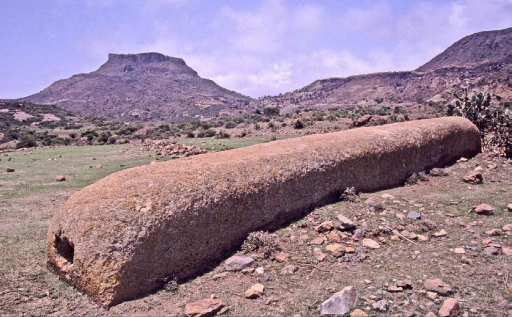
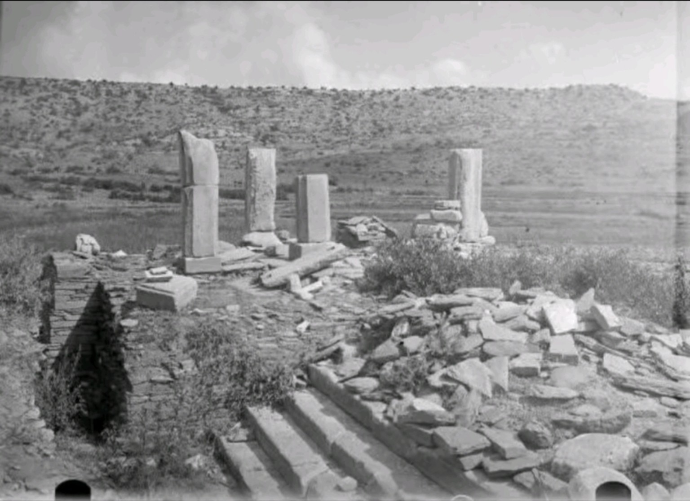
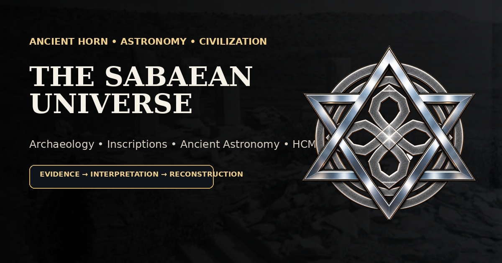
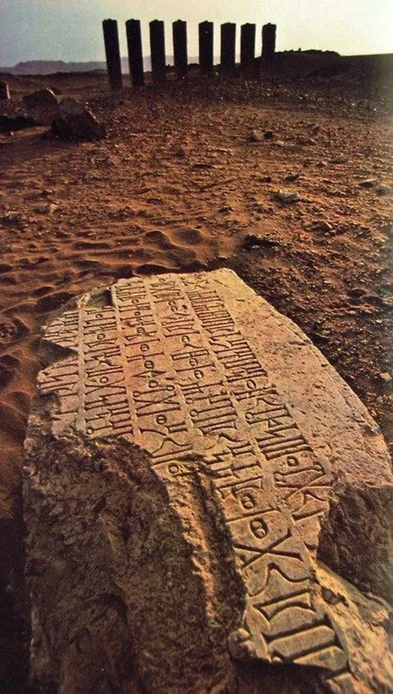
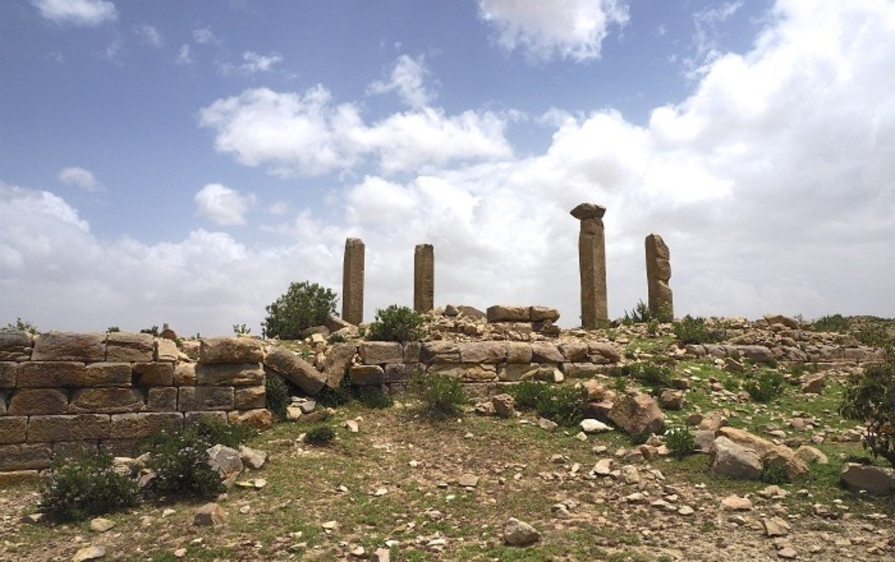
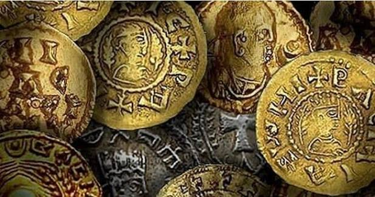
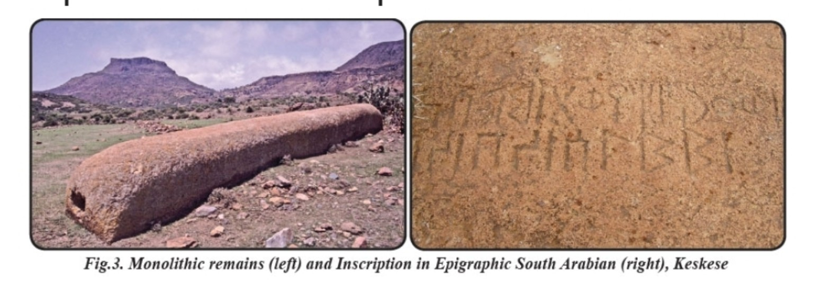

Twenty published articles are organized across four completed research series. Each series separates primary evidence from historical interpretation and project-level reconstruction.
Five source-led articles on DʿMT, Yeha, Almaqah, epigraphy, and continuity toward Aksum. Open DʿMT research section →

Political scale, chronology, Yeha, inscriptions, and the limits of reconstruction.

Architecture, writing, regional archaeology, and cross-Red Sea cultural contact.

Inscriptional and archaeological evidence separated from later interpretation.

A source-first method for inscription photographs, transcription, restoration, transliteration, and interpretation.

Archaeology, settlement history, continuity, transformation, and political development.
Five articles on Aksumite political power, Adulis, Ezana, coinage, and monumental stelae. Open Aksum research section →
Political center, monuments, inscriptions, Red Sea connections, and changing regional reach.
Maritime trade, archaeology, highland connections, imports, and cosmopolitan exchange.
Multilingual royal texts, political representation, coinage, and changing religious language.

Kings, portraits, inscriptions, symbols, metallurgy, chronology, and long-distance exchange.
Monumental stone-working, elite funerary contexts, architectural imagery, chronology, and royal memory.
Five articles on temples, royal dedications, evidence status, and responsible visual epigraphy. Open Almaqah research section →
Architecture, cult, Sabaean connections, local context, and the limits of interpretation.
Sanctuary archaeology, royal dedication, Almaqah, and regional political relationships.
Names, titles, divine references, provenance, restoration, and what a royal inscription can actually establish.
Where direct attestation ends and scholarly interpretation or HCM reconstruction begins.

Authentic inscription imagery, preservation, transcription, restoration, provenance, and responsible digital presentation.
Five articles on the 364-day year, 1 Enoch, horizon astronomy, Venus, and testing HCM-364. Open Ancient Astronomy section →
Ancient calendrical evidence, 52 weeks, four 91-day quarters, and the boundary between ancient systems and HCM-364.
Sun, Moon, six eastern and corresponding western solar gates, changing day length, and schematic astronomy.
Sunrise and sunset movement, solstices, equinoxes, landscape markers, measurement, and archaeoastronomical method.
Morning and evening appearances, conjunctions, the approximately 584-day synodic cycle, and the HCM evidence boundary.
Turning the 13 × 7 × 4 reconstruction into a testable research program using astronomy, archaeology, epigraphy, language, and chronology.
Move from the publication series into the site's larger research hubs.
Political history, inscriptions, chronology, and monuments.
Stelae, coinage, inscriptions, Adulis, and Red Sea connections.
Temples, dedications, cult evidence, and evidence status.
Verified inscriptions, transliteration, translation, and reading method.
Calendars, Sun, Moon, Venus, horizon observation, and celestial mechanics.
13 Houses × 7 Gates × 4 Elements = 364 cells.